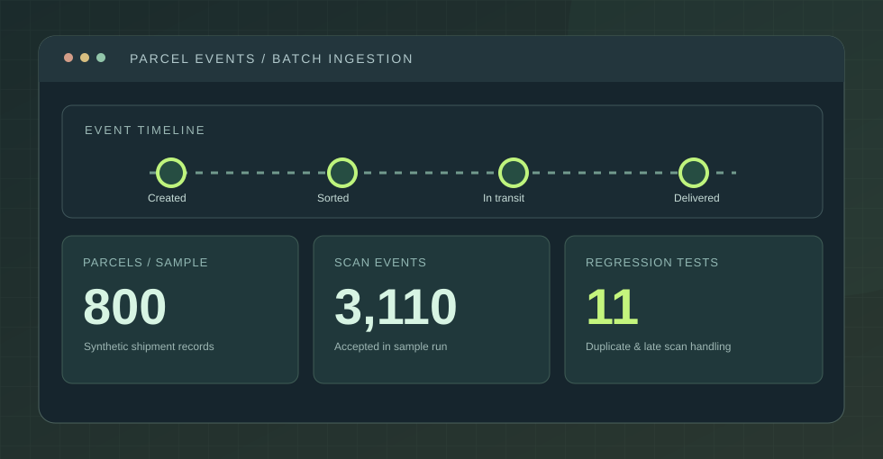
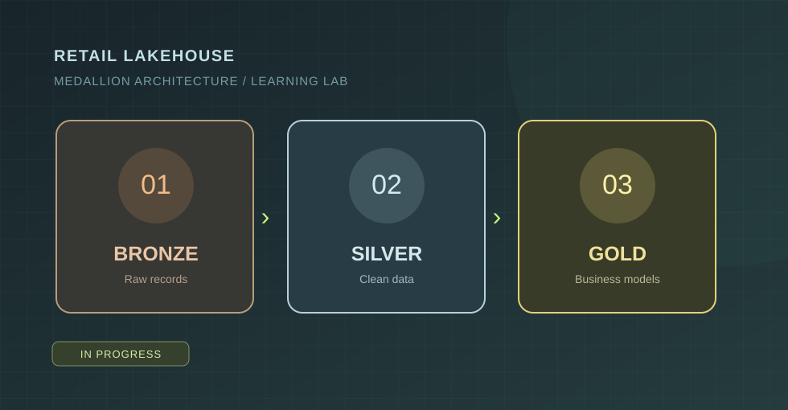
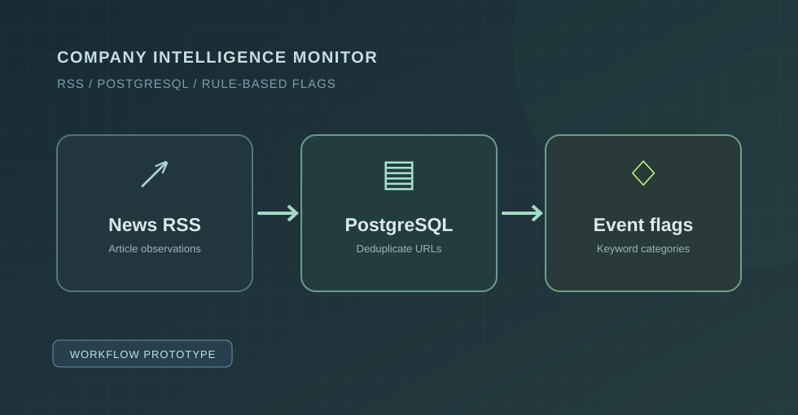

Nordic Weather
Risk Pipeline
Historical weather data, processed through a tested PySpark pipeline with data-quality checks, Parquet layers, and SQL storage.
360 daily records in documented backfillView case study
I'm Mohammed — a data engineering-focused developer working with Python, SQL and PySpark to turn messy sources into validated, analytics-ready data.
Hands-on projects where the engineering choices matter: ingestion, validation, modeling, and repeatable results.
Historical weather data, processed through a tested PySpark pipeline with data-quality checks, Parquet layers, and SQL storage.

Batch ingestion built around the problems that break logistics reporting: late-arriving events, duplicate scans, and invalid source rows.

Exploring retail data transformation with PySpark and SQL in Databricks. The published repository is currently an early scaffold.
See repository
An n8n workflow for RSS ingestion, PostgreSQL deduplication, and rule-based event flags. Manual trigger; not fully end-to-end verified.
See repositoryMy focus is less on collecting tools and more on using the right ones to move data reliably from source to destination.
The foundation of the pipelines I build and explore.
From ingestion and validation through transformations and modeling.
Working with practical storage, reporting, and development workflows.
What I pay attention to when moving from a raw source to a dataset someone can rely on.
Keep track of where records came from, when they arrived, and how they were parsed.
Validate important fields, reject unusable records explicitly, and surface issues instead of silently discarding them.
Choose models and metrics that match how the data will actually be used.
Design for reruns, duplicates, and changing inputs — then document the trade-offs.
I'm Mohammed Minhajul Islam Saimon, based in Aarhus, Denmark. My work and interests sit at the intersection of data, operations, and practical problem solving.
I'm building toward data engineering roles by creating projects that make the entire process visible: getting data in, checking it, transforming it, storing it, and explaining what can go wrong along the way.
I care about understandable code, honest project documentation, and learning the engineering decisions behind reliable systems.
I'm interested in teams building thoughtful data infrastructure, pipelines, and analytics platforms. I'd be glad to talk about an opportunity or walk you through the projects here.